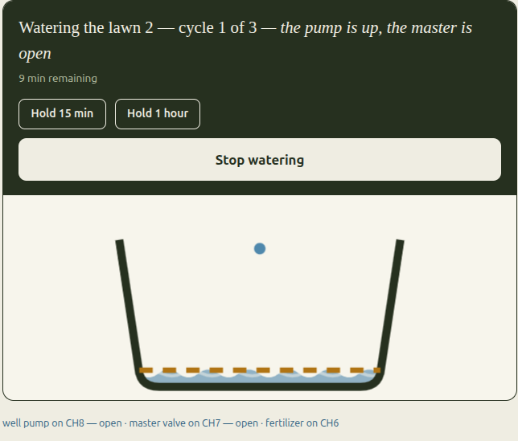
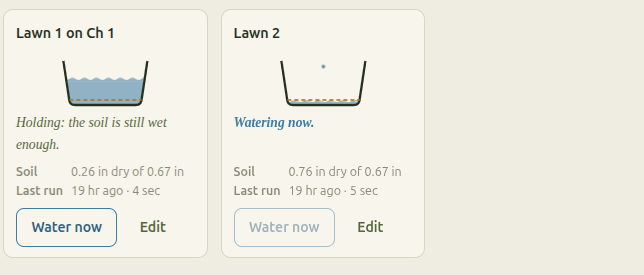
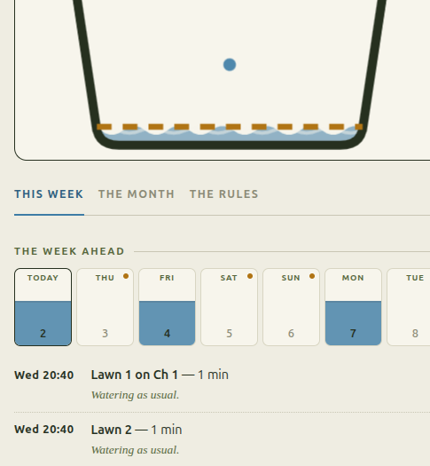
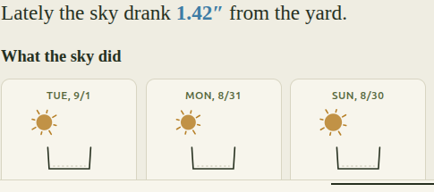

Hand your garden to someone who truly knows it.
Imagine a gardener who knows your soil by heart, reads the sky each morning, and gives every bed exactly the drink it needs. Who is there before you wake, and asks for nothing. You walk out to something green and thriving, and you never once had to think about it.

You wanted a garden. Not a second job.
You know the small defeats. The sprinklers running full tilt in the middle of a downpour. The corner by the gate that always goes crisp by July. The August water bill that makes you wince. The smart box that wanted an account, an app, and a monthly fee, all so you could turn on a hose.
None of that is gardening. That is being a timer's assistant.
What you actually wanted is older and simpler than any of it. Someone who knows your patch of ground. Who sees the soil is still dark from Tuesday's rain and lets it rest. Who gives the thirsty bed a long, slow drink and the shady one just a sip. Who shows up before you are awake, and asks for nothing in return.
That is what माली means. Gardener. And it is the whole of the idea: to hand your garden to someone who tends it the way you would, if you had the time, the knowledge, and forty years of doing it well.
Then you get on with your life. The garden grows greener. The bill grows smaller. And the watering, for the first time, is simply no longer yours to carry.
This is that gardener, thinking.
A feeling is easy to promise, so here is the receipt. This is a real, brutal stretch of Sacramento weather, watered by the very code that opens your valve. Watch it let the soil dry, wait through the cool days, then decide a bed has earned a long drink. No calendar. Just attention, the way a gardener pays it.
The whole yard, at a glance, in plain English.
This is the real app, served from the little box itself. No dashboard to learn. Each bed is a tub of water you can read across the kitchen, and every decision comes with a because.



Every box at the store asks you to give something up.
You have probably stood in that aisle already, which may be why you are here. Here is the honest shape of the choice, with no hard feelings toward any of them.
Faithful, but deaf
- Runs the same minutes in a heat wave and in a storm
- Cannot tell you how much water you used
- A valve that stuck open on Tuesday is still open
Clever, but not yours
- Every watering decision takes a trip through somebody's cloud
- When their servers have a bad day, so does your lawn
- Features you bought have a way of moving behind a plan
- Your yard quietly becomes somebody's data
Yours, but hard work
- Honest ownership, with the charm of a decade ago
- A wall of settings where a sentence should be
- You are expected to enjoy the fiddling
Why choose?
- Smart: it minds your soil, not the calendar
- Local: it decides at home, even with the internet out
- Private: your yard, and its data, stay yours
- Kind: it explains itself in plain sentences
A timer knows the day. Maali knows the soil.
A timer knows what day it is. Your lawn does not care what day it is. It cares how much water is left in the soil. So every bed in Maali carries a running ledger: the sun and wind and thirsty roots take water out, the rain and the sprinklers put water back. That ledger is the whole brain.
One quiet idea, and you feel it everywhere. Four hot days with the power out earn a long drink when it wakes. Four cool days with rain earn nothing at all. Nobody wrote a catch-up rule for either one. The ledger simply still knew what the soil was owed. Nothing was missed, so there is no missed-run setting to fuss over.
Maali reads the daily thirst number from a free public weather service, the same number the chart above is drawn from. During setup it looks up the actual soil under your yard from the public soil survey, and it asks what is planted in words you would use over a fence: lawn, shrubs, natives. Nobody will ask you for a crop coefficient. If the weather feed goes quiet, it waters carefully from your local averages and says so right on the screen.
And then it tells you, in a sentence. You get minutes, and a because. Never inches, never coefficients, unless you go looking. And if you do like the numbers, they are all there, honest and editable, one tap deeper. Both kinds of gardener are welcome here.
If you cannot guess what your controller will do tomorrow morning, we have failed you. No pile of settings makes up for that.
Four layers stop the water. The first one is not software.
A watering computer can make exactly one unforgivable mess: water that will not stop. So the promise that matters most here is the one that keeps working when the software has lost its wits entirely.
The relay board closes the valve by itself
Every valve is switched on with a countdown that lives on the relay board itself. When the countdown runs out, the board shuts the valve on its own. No firmware, no network, not even controller power is needed for that to happen.
A second task watches the first
A second, stubborn little task keeps its own watch. It enforces the longest a valve may ever run, and once a second it asks the relays what they are really doing and raises a fuss if the answer does not match.
Bad programs are refused at save time
Programs are checked the moment you save them, against run caps, watering rules, and beds that would quarrel. A thirsty ledger can never talk anybody into a run longer than the ceiling.
All commands pass through one gate
Every command walks through one gate, where all the safety rules live together in one place. A rule the gate does not recognise means no. And every no is written in the daybook with its reason, in plain language, for you to read.
Down the pipe, one flow meter learns what each bed normally drinks. Water moving when nothing was asked for, or far too much of it, means a burst line: everything locks shut and you are told. A trickle where a gush belongs means a clogged filter or a tired valve. We tuned those alarms to hardly ever cry wolf, because a false alarm that stops the water in a hot week hurts more than a small leak found a day later.
The whole thing lives in the little box by your valves.
That is not a slogan. The code is held to it as a rule: nothing outside your house can put water on your ground. Everything below follows from it.
There is nothing to sign up for. You choose a password for the box during setup, and that is the entire ceremony.
It makes exactly two calls out: one for the weather, one to ask if an update exists. Both optional. Nothing else ever leaves the building.
Your watering history, your soil, your bed names. They stay in the box. Nobody studies them, nobody bundles them, nobody sells them.
The whole app is served from the controller itself. No outside scripts, no borrowed fonts, nothing fetched from anywhere. It works with the internet unplugged.
If you run Home Assistant, Maali introduces itself and your beds, programs, and faults all appear on their own. Entirely optional; nothing leans on it.
The week's waterings come as a calendar feed any calendar app can subscribe to. The lawn's drink shows up right next to soccer practice.
Plain, honest web calls over your own network. Script it, poke it, wire it into whatever you already run. It is your controller, after all.
New firmware is signature-checked, tried in a spare slot, and quietly rolled back if it fails to wake up properly. Nothing installs itself unless you ask it to.
Keep a one-file backup of your whole setup. If a board ever dies, flash a fresh off-the-shelf one from your browser and restore the file. No waiting on us, and no yard to rebuild by hand.
You pay once, for parts, and then you are done paying.
The number that matters is the one you never pay again. No subscription, no per-feature tier, no cloud that has to keep running for your grass to get watered. You pay for good hardware once, and after that the only running cost is the water itself.
- 01Hardware you own, running software you rent
- 02Features that came in the box, later moved to a plan
- 03A retirement announcement you do not get a vote on
- 04A server somewhere that has to stay alive for your grass
- 01Ordinary electrical-cabinet parts, every one replaceable
- 02Not one part needs soldering, ever
- 03No subscription and no per-feature tier, now or later
- 04Eight more zones costs one more relay board
| Line | Part | USD |
|---|---|---|
| 01 | 24VAC transformer, Class 2, plug-in | 20 |
| 02 | 12V DIN supply | 12 |
| — | ESP32-S3 controller, 8-ch Modbus relay board, enclosure, terminals | 213 |
| 17 | Surge protection, three-point, DIN modules | 42 |
| 20 | Modbus pulse counter for the flow sensor | 20 |
| Order-now total | 307 |
The surge protection costs $42 instead of $12 because the cheap kind needs soldering, and nothing in this build is allowed to. It is also the part that decides whether your controller shrugs off a lightning-season jolt arriving on 200 feet of buried valve wire. Worth every penny of the thirty.
It takes an afternoon, a screwdriver, and the wires already in your wall.
If you have ever swapped a light fixture or built a computer, you can do this with a cup of tea beside you. Everything lands on screw terminals. The house current never enters the cabinet at all: the transformer is a plug-in brick, on purpose, so the scariest wire you will touch carries 24 volts.
Order the parts
One list, supplier links, a spare source for every line, and a short note on the three choices that change the price.
Clip it to the rail
Power supply, controller, relay board, surge modules, terminals. Everything clips onto one metal rail, and everything can later clip off again. No part is trapped.
Move the valve wires across
Pull the labelled wires off the old timer and land them on the new terminals. One common, one per bed. The old box comes off the wall last, once you are sure.
Walk through setup
Your town, your soil, then bed by bed. Each bed runs for thirty seconds while you name it, so you see your own sprinklers pop up as you type. A swapped pair of wires shows itself at the one moment it is cheap to fix.
Stop thinking about it
Set your district's watering days once and go live your life. It waters, it explains, it emails nobody. If anything ever goes wrong, it tells you which rule said no and why.
It is on a bench, not yet in a yard. Here is the whole truth.
You are going to build this with your own hands, so you deserve the honest state of it rather than a launch page. The firmware is finished, and the safety promises have now been proven with real wires on a real bench. But it has not yet watered a real yard through a whole season, and this page will keep saying so until it has.
This is early. The firmware is finished and the safety is proven on the bench, but Maali has not yet watered a real yard through a whole season. We would rather tell you that plainly than dress it up, and this page will keep saying so until the season is behind us.
A greener yard, and a smaller water bill, on your terms.
Deep, infrequent watering grows deep roots. The ledger waits after rain, splits long runs into soaks so nothing runs down the driveway, and never once asks you to log in. Everyone is happy, especially the worms.
Start with the parts list